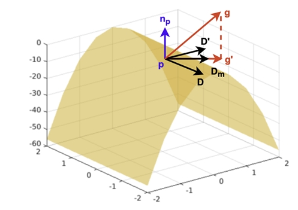

Method

Normal variation analysis for estimating principal directions on the tangent plane.

has focused on designing novel neural network architectures for accurate 3D point cloud completion. However, unlike in point cloud classification and reconstruction, the role of adversarial samples in 3D point cloud completion has seldom been explored. In this work, we show that training with adversarial samples can improve the performance of neural networks on 3D point cloud completion tasks. We propose a novel approach to generate adversarial samples that benefit both the performance of clean and adversarial samples. In contrast to the PGD-k attack, our method generates adversarial samples that keep the geometric features in clean samples and contain few outliers. In particular, we use principal directions to constrain the adversarial perturbations for each input point. The gradient components in the mean direction of principal directions are taken as adversarial perturbations. In addition, we also investigate the effect of using the minimum curvature direction. Besides, we adopt attack strength accumulation and auxiliary Batch Normalization layers method to speed up the training process and alleviate the distribution mismatch between clean and adversarial samples. Experimental results show that training with the adversarial samples crafted by our method effectively enhances the performance of PCN on the ShapeNet dataset.
@inproceedings{wu20223d,
title={3d point cloud completion with geometric-aware adversarial augmentation},
author={Wu, Mengxi and Huang, Hao and Fang, Yi},
booktitle={2022 26th International Conference on Pattern Recognition (ICPR)},
pages={4001--4007},
year={2022},
organization={IEEE}
}